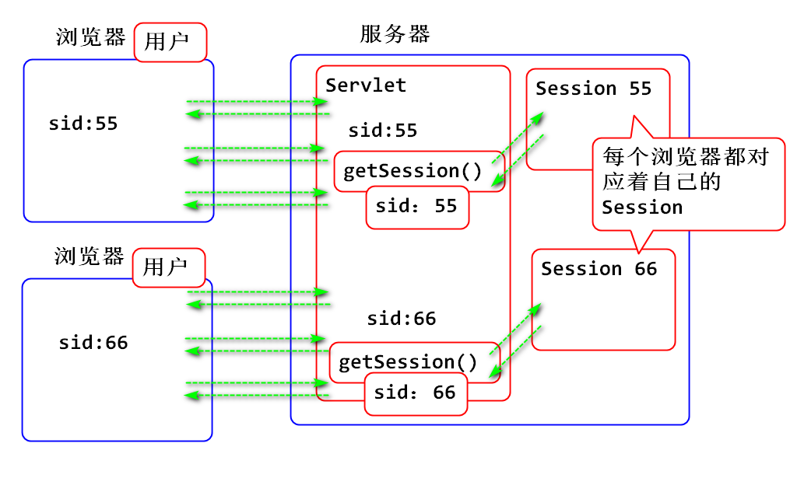
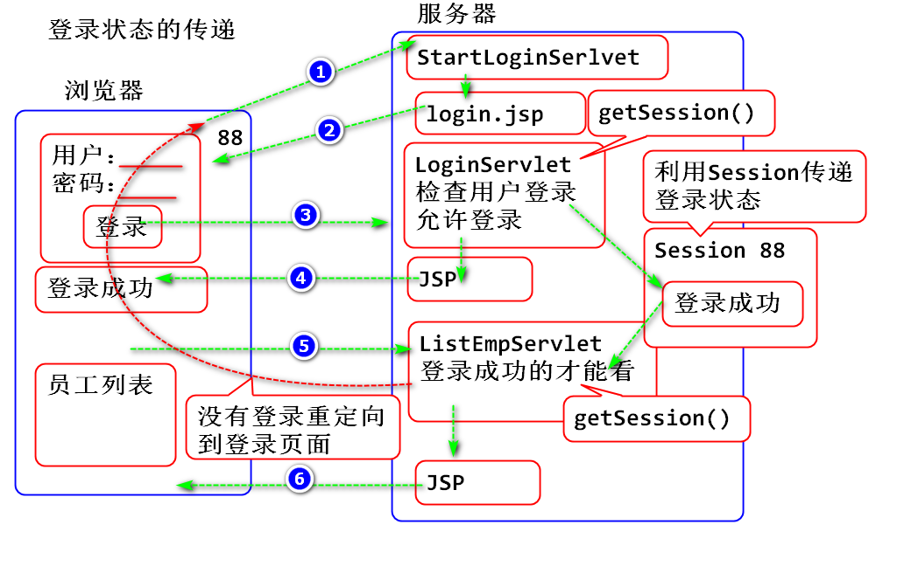
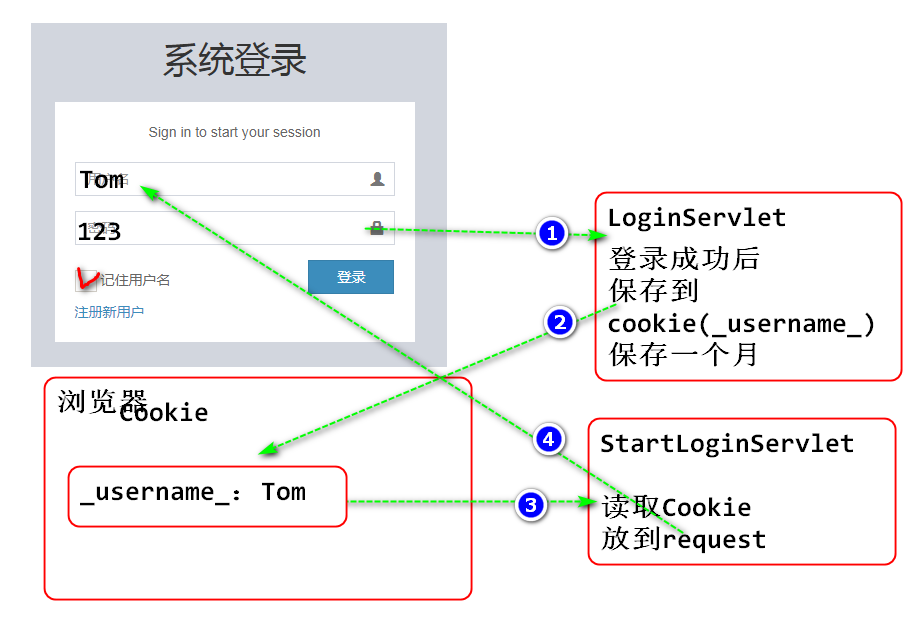
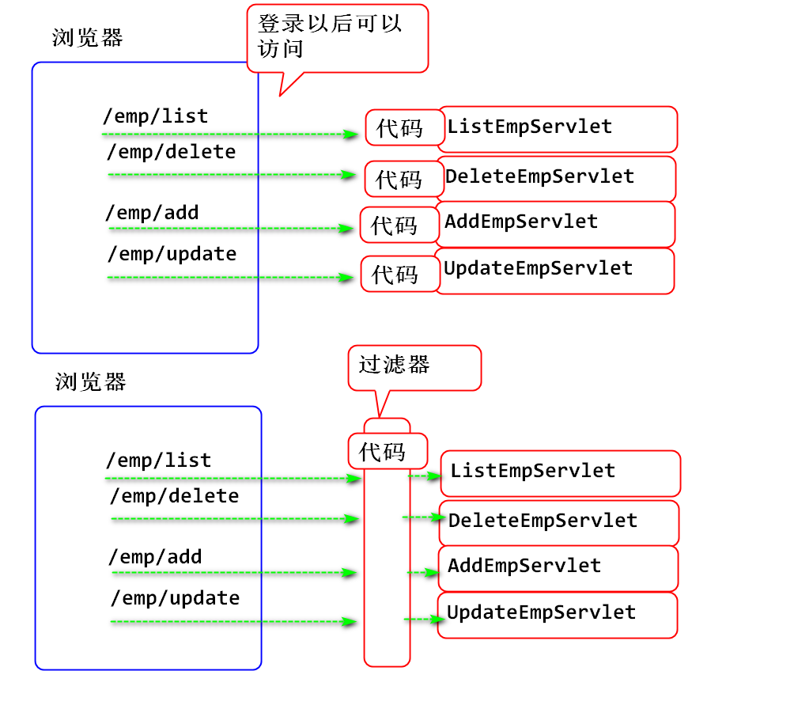
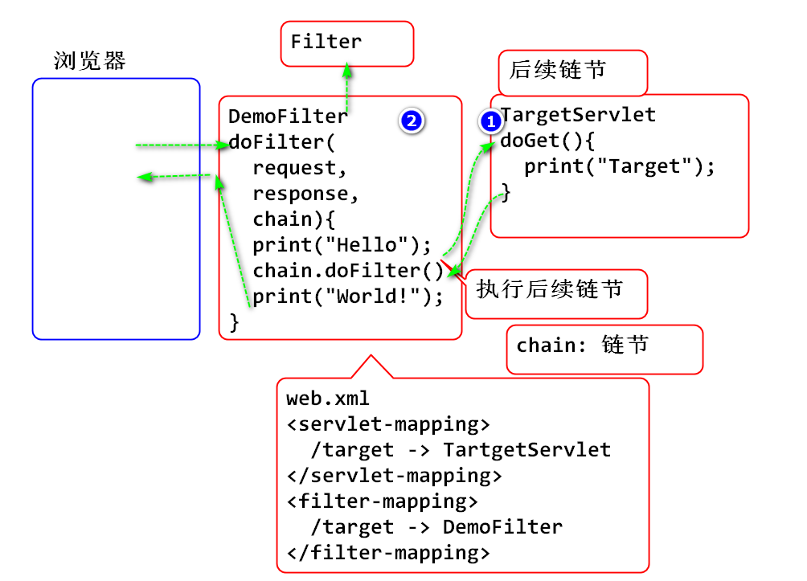

每个浏览器都对应着自己的Session
原理：

案例：
public class TestServlet extends HttpServlet {
private static final long serialVersionUID = 1L;
/**
* 请求URL /day10/test
*/
protected void doGet(
HttpServletRequest request,
HttpServletResponse response)
throws ServletException, IOException {
/**
* 测试不同浏览器访问相同Servlet获得的Session对象
* 是不同的， 其中每个浏览器都对应着自己的Session
*/
//在服务器上获得浏览器的身份信息
String ua = request.getHeader("User-Agent");
//获取当前浏览器对应的Session对象
HttpSession session=request.getSession();
//获取Session对象的ID
String sid = session.getId();
//打桩输出：
System.out.println("浏览器："+ua);
System.out.println("SessionID:"+sid);
System.out.println("-------------------");
response.setContentType("text/html;charset=UTF-8");
response.getWriter().print("OK");
}
}
配置：
<servlet>
<description></description>
<display-name>TestServlet</display-name>
<servlet-name>TestServlet</servlet-name>
<servlet-class>day10.TestServlet</servlet-class>
</servlet>
<servlet-mapping>
<servlet-name>TestServlet</servlet-name>
<url-pattern>/day10/test</url-pattern>
</servlet-mapping>
测试：
http://localhost:8080/Servlet10/day10/test
一定开启两个浏览器访问这个案例
利用Session可以传递登录状态，实现登录权限检查：

创建StartLoginServlet
public class StartLoginServlet extends HttpServlet {
private static final long serialVersionUID = 1L;
/**
* 显示登录界面的Servlet
* 请求URL /user/start-login
*/
protected void doGet(
HttpServletRequest request,
HttpServletResponse response)
throws ServletException, IOException {
String contextPath=request.getContextPath();
request.setAttribute("root", contextPath);
//记住用户名功能，可以在这里实现
String path="/WEB-INF/jsp/login.jsp";
request.getRequestDispatcher(path)
.forward(request, response);
}
}
配置 web.xml
<servlet>
<description></description>
<display-name>StartLoginServlet</display-name>
<servlet-name>StartLoginServlet</servlet-name>
<servlet-class>day10.StartLoginServlet</servlet-class>
</servlet>
<servlet-mapping>
<servlet-name>StartLoginServlet</servlet-name>
<url-pattern>/user/start-login</url-pattern>
</servlet-mapping>
将 /pages/examples/login.html 复制到/WEB-INF/jsp/login.jsp
更新JSP页面
<%@ page
language="java"
contentType="text/html; charset=UTF-8"
pageEncoding="UTF-8"
%>
<%@ taglib uri="http://java.sun.com/jsp/jstl/core"
prefix="c"%>
<!DOCTYPE html>
<html>
<head>
<meta charset="utf-8">
<meta http-equiv="X-UA-Compatible" content="IE=edge">
<title>AdminLTE 2 | Log in</title>
<!-- Tell the browser to be responsive to screen width -->
<meta content="width=device-width, initial-scale=1, maximum-scale=1, user-scalable=no" name="viewport">
<!-- Bootstrap 3.3.7 -->
<link rel="stylesheet" href="${root}/bower_components/bootstrap/dist/css/bootstrap.min.css">
<!-- Font Awesome -->
<link rel="stylesheet" href="${root}/bower_components/font-awesome/css/font-awesome.min.css">
<!-- Ionicons -->
<link rel="stylesheet" href="${root}/bower_components/Ionicons/css/ionicons.min.css">
<!-- Theme style -->
<link rel="stylesheet" href="${root}/dist/css/AdminLTE.min.css">
<!-- iCheck -->
<link rel="stylesheet" href="${root}/plugins/iCheck/square/blue.css">
<!-- HTML5 Shim and Respond.js IE8 support of HTML5 elements and media queries -->
<!-- WARNING: Respond.js doesn't work if you view the page via file:// -->
<!--[if lt IE 9]>
<script src="https://oss.maxcdn.com/html5shiv/3.7.3/html5shiv.min.js"></script>
<script src="https://oss.maxcdn.com/respond/1.4.2/respond.min.js"></script>
<![endif]-->
<!-- Google Font -->
<!-- <link rel="stylesheet" href="https://fonts.googleapis.com/css?family=Source+Sans+Pro:300,400,600,700,300italic,400italic,600italic"> -->
</head>
<body class="hold-transition login-page">
<div class="login-box">
<div class="login-logo">
<h1>系统登录</h1>
</div>
<!-- /.login-logo -->
<div class="login-box-body">
<!-- empty 空, not empty 非空
not empty message 检查message是否为空
-->
<c:choose>
<c:when test="${not empty message}">
<p class="login-box-msg">${message}</p>
</c:when>
<c:otherwise>
<p class="login-box-msg">Sign in to start your session</p>
</c:otherwise>
</c:choose>
<form action="${root}/user/login" method="post">
<div class="form-group has-feedback">
<input type="text" class="form-control"
placeholder="用户名" name="name"
value="${name}">
<span class="glyphicon glyphicon-user form-control-feedback"></span>
</div>
<div class="form-group has-feedback">
<input type="password" class="form-control"
placeholder="密码" name="password">
<span class="glyphicon glyphicon-lock form-control-feedback"></span>
</div>
<div class="row">
<div class="col-xs-8">
<div class="checkbox icheck">
<label>
<input type="checkbox"> 记住用户名
</label>
</div>
</div>
<!-- /.col -->
<div class="col-xs-4">
<button type="submit" class="btn btn-primary btn-block btn-flat">登录</button>
</div>
<!-- /.col -->
</div>
</form>
<a href="${root}/user/register"
class="text-center">注册新用户</a>
</div>
<!-- /.login-box-body -->
</div>
<!-- /.login-box -->
<!-- jQuery 3 -->
<script src="${root}/bower_components/jquery/dist/jquery.min.js"></script>
<!-- Bootstrap 3.3.7 -->
<script src="${root}/bower_components/bootstrap/dist/js/bootstrap.min.js"></script>
<!-- iCheck -->
<script src="${root}/plugins/iCheck/icheck.min.js"></script>
<script>
$(function () {
$('input').iCheck({
checkboxClass: 'icheckbox_square-blue',
radioClass: 'iradio_square-blue',
increaseArea: '20%' /* optional */
});
});
</script>
</body>
</html>
测试：
http://localhost:8080/Servlet10/user/start-login
建表
create table t_user(
id int auto_increment primary key,
name varchar(100),
password varchar(100),
email varchar(200)
);
insert into t_user (id, name, password, email )
values (null, 'Tom', '123', 'tom@tedu.cn');
创建 User 类：
public class User {
private int id;
private String name;
private String password;
private String email;
public User() {
}
public User(int id, String name, String password, String email) {
super();
this.id = id;
this.name = name;
this.password = password;
this.email = email;
}
public int getId() {
return id;
}
public void setId(int id) {
this.id = id;
}
public String getName() {
return name;
}
public void setName(String name) {
this.name = name;
}
public String getPassword() {
return password;
}
public void setPassword(String password) {
this.password = password;
}
public String getEmail() {
return email;
}
public void setEmail(String email) {
this.email = email;
}
@Override
public String toString() {
return "User [id=" + id + ", name=" + name + ", password=" + password + ", email=" + email + "]";
}
}
创建 UserDao 类，封装根据用户名获取用户信息的方法
public class UserDao {
public User findUserByName(String name) {
String sql="select id, name, password, email "
+ "from t_user where name=?";
try(Connection conn = DBUtil.getConnection()){
PreparedStatement ps=conn.prepareStatement(sql);
ps.setString(1, name);
ResultSet rs=ps.executeQuery();
User user=null;
while(rs.next()) {
user = row2user(rs);
}
return user;
}catch(Exception e) {
e.printStackTrace();
throw new RuntimeException(e);
}
}
private User row2user(ResultSet rs)
throws SQLException{
int id = rs.getInt("id");
String name = rs.getString("name");
String password = rs.getString("password");
String email = rs.getString("email");
return new User(id, name, password, email);
}
}
测试
@Test
public void testFindUserByName() {
UserDao dao = new UserDao();
User user = dao.findUserByName("Tom");
System.out.println(user);
}
编写LoginServlet
public class LoginServlet extends HttpServlet {
private static final long serialVersionUID = 1L;
/**
* 检查用户登录表单Servlet
* 请求URL /user/login
* 处理 Post 请求
*/
protected void doPost(
HttpServletRequest request,
HttpServletResponse response)
throws ServletException, IOException {
//读取表单参数
request.setCharacterEncoding("UTF-8");
String name = request.getParameter("name");
String password = request.getParameter("password");
// 访问数据层，检查用户信息
UserDao dao = new UserDao();
User user = dao.findUserByName(name.trim());
//将用户名保存在 request中
request.setAttribute("name",name);
String contextPath = request.getContextPath();
request.setAttribute("root", contextPath);
//如果没有找到用户信息，表示用户名是错误的
if(user==null) {
//转回到登录页面显示错误消息
request.setAttribute("message",
"用户名或者密码错误");
String path = "/WEB-INF/jsp/login.jsp";
request.getRequestDispatcher(path)
.forward(request, response);
return;
}
//找到用户信息，则判断密码是否正确
//哪个变量不可能为null放到前面
if(user.getPassword().equals(password)) {
//如果密码相等， 则可以登录
//将登录结果保存在 session
HttpSession session = request.getSession();
session.setAttribute("loginUser", user);
//转发到消息页面显示登录成功消息
request.setAttribute("message", "登录成功");
String path = "/WEB-INF/jsp/message.jsp";
request.getRequestDispatcher(path)
.forward(request, response);
return;
}
//执行到这个位置？密码不一致的情形
request.setAttribute("message",
"用户名或者密码错误");
String path = "/WEB-INF/jsp/login.jsp";
request.getRequestDispatcher(path)
.forward(request, response);
}
}
配置web.xml
<servlet>
<description></description>
<display-name>LoginServlet</display-name>
<servlet-name>LoginServlet</servlet-name>
<servlet-class>day10.LoginServlet</servlet-class>
</servlet>
<servlet-mapping>
<servlet-name>LoginServlet</servlet-name>
<url-pattern>/user/login</url-pattern>
</servlet-mapping>
测试
利用Cookie实现记住用户名功能
原理：

实现步骤:
重构 LoginServlet 在用户登录成功时候保存用户名到Cookie
//将用户名存储到 Cookie中
if("true".equals(save)) {
Cookie cookie = new Cookie(
"_username_",
URLEncoder.encode(name,"UTF-8"));
cookie.setMaxAge(60*60*24*30);
cookie.setPath("/");
response.addCookie(cookie);
}
重构 StartLoginServlet 检查Cookie，如果有保存的用户名就读取出来，送到login.jsp 显示
//从全部Cookie中查找，如果Cookie中包含 用户名
//就利用request送到login.jsp中显示
Cookie[] cookies = request.getCookies();
if(cookies!=null) {
for (Cookie cookie : cookies) {
String name=cookie.getName();
if("_username_".equals(name)) {
String username=cookie.getValue();
username = URLDecoder
.decode(username,"UTF-8");
request.setAttribute("name", username); }
}
}
测试
用途：利用Filter可以实现如：权限检查、编码过滤、请求日志等功能

使用过滤器

编写Servlet
public class TargetServlet extends HttpServlet {
private static final long serialVersionUID = 1L;
/**
* 被过滤器调用的目标 (Target)Servlet
* 请求URL /target
*/
protected void doGet(
HttpServletRequest request,
HttpServletResponse response)
throws ServletException, IOException {
System.out.println("Target");
response.setContentType("text/html;charset=UTF-8");
response.getWriter().println("OK");
}
}
编写 Filter
public class DemoFilter implements Filter {
@Override
public void doFilter(
ServletRequest request,
ServletResponse response,
FilterChain chain)
throws IOException, ServletException {
//chain 链节、链
System.out.println("Hello");
//执行后续的链节，就是执行后续的 Servlet
chain.doFilter(request, response);
System.out.println("World!");
}
@Override
public void destroy() {
}
@Override
public void init(FilterConfig arg0) throws ServletException {
}
}
配置：
<servlet>
<description></description>
<display-name>TargetServlet</display-name>
<servlet-name>TargetServlet</servlet-name>
<servlet-class>day10.TargetServlet</servlet-class>
</servlet>
<servlet-mapping>
<servlet-name>TargetServlet</servlet-name>
<url-pattern>/target</url-pattern>
</servlet-mapping>
<!-- 配置过滤器 -->
<filter>
<filter-name>demo</filter-name>
<filter-class>day10.DemoFilter</filter-class>
</filter>
<filter-mapping>
<filter-name>demo</filter-name>
<url-pattern>/target</url-pattern>
</filter-mapping>
测试：
http://localhost:8080/Servlet10/target